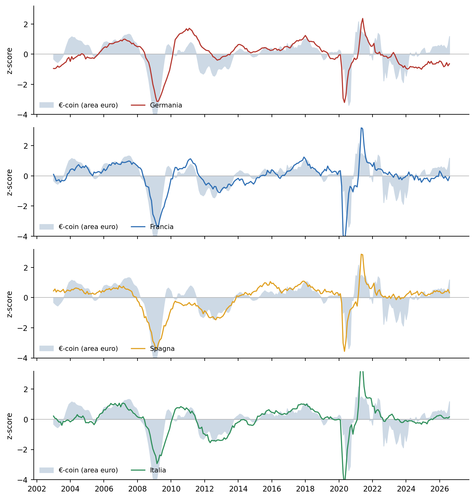
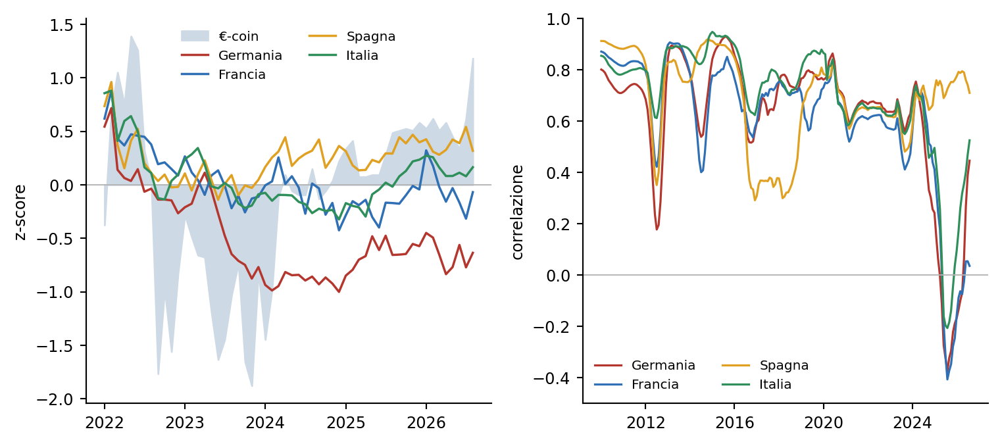

Il ciclo dell’area euro visto attraverso i principali paesi
Indicatori ciclici proxy per Germania, Francia, Spagna e Italia e confronto con €-coin
Paolo Volterra ![]()
Banca d’Italia pubblica due indicatori ciclici coincidenti costruiti con la stessa metodologia: €-coin per l’area euro e Ita-coin per l’Italia. Non esiste un equivalente ufficiale per gli altri grandi paesi dell’area. Questo documento costruisce un indicatore ciclico mensile proxy per Germania, Francia, Spagna e Italia, combinando il clima economico rilevato dalle indagini congiunturali armonizzate della Commissione europea con la dinamica tendenziale della produzione industriale. Le quattro serie proxy vengono confrontate con €-coin per descrivere l’eterogeneità interna al ciclo comune. Nel biennio 2025–2026 emerge una divergenza persistente fra una Spagna sopra la propria media storica e una Germania sotto. Il proxy spagnolo è quello più sincronizzato con €-coin nella finestra recente, ma il risultato descrive un’associazione statistica e non una scomposizione strutturale dell’indicatore di Banca d’Italia.
euro-coin, ita-coin, ciclo economico, area euro, Germania, Spagna, indicatori coincidenti, regime macroeconomico, stress test, ICAAP
Versione citabile su Zenodo, con il PDF: doi.org/10.5281/zenodo.22255847.
1 Perché guardare oltre l’aggregato
L’indicatore €-coin sintetizza in un unico numero mensile la fase ciclica dell’intera area euro, stimando la crescita tendenziale del prodotto interno lordo una volta rimosse le componenti stagionali, gli errori di misura e la volatilità di brevissimo periodo [1], [2]. È un termometro dell’area nel suo complesso, e per questo motivo non dice nulla, di per sé, su quale economia nazionale stia trainando o frenando il risultato aggregato.
Per un utilizzatore dell’indicatore la distinzione conta. Due situazioni con lo stesso valore di €-coin — poniamo, una crescita ciclica lievemente positiva — hanno implicazioni molto diverse a seconda che quel valore nasca da una crescita diffusa e omogenea fra i paesi membri, oppure dalla compensazione fra un centro in contrazione e una periferia in espansione. Nel secondo caso l’indicatore aggregato nasconde una fragilità: la tenuta dipende dalla persistenza di una divergenza, e un cambio di segno in uno solo dei due blocchi sposterebbe rapidamente il dato complessivo.
Ricostruire un indicatore ciclico per i singoli paesi permette quindi di affiancare a €-coin una lettura delle traiettorie nazionali. Non si tratta di scomporre tecnicamente l’indicatore, ma di verificare se il segnale aggregato coesista con andamenti omogenei o divergenti fra le maggiori economie.
2 La logica dell’indicatore proxy
2.1 Il punto di partenza: manca un equivalente direttamente confrontabile
Banca d’Italia costruisce e diffonde due sole serie di questa famiglia: €-coin per l’area euro [1] e Ita-coin per l’Italia [3], [4]. Le due condividono l’impianto metodologico, un modello fattoriale dinamico stimato su un ampio insieme di statistiche mensili armonizzate [5], [6]. Non esiste per Germania, Francia o Spagna una serie ufficiale costruita con la stessa metodologia e pubblicata come storico mensile direttamente confrontabile. Esistono altri indicatori nazionali di attività e nowcasting, ma rispondono a specifiche e finalità diverse.
Per confrontare i quattro paesi occorre quindi costruire un indicatore surrogato, con due requisiti: frequenza mensile e trattamento identico per tutti i paesi, in modo che le differenze fra le serie riflettano differenze reali fra le economie e non differenze di costruzione.
2.2 Le due componenti
L’indicatore proxy completo per ciascun paese è la media di due componenti standardizzate.
La prima è l’Economic Sentiment Indicator della Commissione europea, un indice composito che aggrega i giudizi di imprese e famiglie raccolti ogni mese con questionari identici in tutti gli Stati membri [7]. È la misura di clima economico più tempestiva disponibile con piena comparabilità fra paesi, ed è calibrata in modo che il valore 100 corrisponda alla media storica di ciascun paese.
La seconda è la produzione industriale del comparto manifatturiero, rilevata da Eurostat con criteri armonizzati e corretta per stagionalità e giorni lavorativi [8]. È un dato di quantità, non di opinione, e cattura la parte del ciclo legata all’attività reale. Viene trasformata nella variazione percentuale rispetto a dodici mesi prima della media mobile trimestrale, una misura che descrive la fase ciclica attenuando il rumore mensile senza amplificare gli episodi estremi.
2.3 La standardizzazione
Ogni componente viene convertita in punteggio standardizzato (z-score) sulla propria distribuzione dal 2003 in avanti: il valore zero corrisponde alla media di lungo periodo del paese, e l’unità a una deviazione standard. L’indicatore nazionale è la media dei due z-score. Lo stesso trattamento viene applicato a €-coin e a Ita-coin, in modo che tutte le serie siano leggibili sulla stessa scala.
Un valore positivo indica quindi una fase ciclica più forte della norma storica di quel paese; un valore negativo, più debole. La scala è relativa a ciascun paese: un indicatore a zero per la Germania e a zero per la Spagna non significa che le due economie crescano allo stesso ritmo, ma che ciascuna è in linea con la propria media.
2.4 Formalizzazione
Per il paese \(c\) al mese \(t\), l’indicatore ciclico proxy è la media dei due z-score delle sue componenti:
\[\mathrm{coin}_{c,t} \;=\; \tfrac{1}{2}\left[\, z(\mathrm{ESI}_{c,t}) + z(g_{c,t}) \,\right]\]
Lo z-score standardizza ciascuna serie sottraendo la sua media \(\mu_x\) e dividendo per la sua deviazione standard \(\sigma_x\), entrambe calcolate sull’intera finestra dal gennaio 2003 all’ultimo mese disponibile:
\[z(x_t) \;=\; \frac{x_t - \mu_x}{\sigma_x}\]
La componente reale \(g_{c,t}\) è la variazione della produzione industriale rispetto a dodici mesi prima, calcolata sulla media mobile a tre mesi dell’indice \(\mathrm{IP}\) per attenuare il rumore:
\[\overline{\mathrm{IP}}_{c,t} = \frac{\mathrm{IP}_{c,t} + \mathrm{IP}_{c,t-1} + \mathrm{IP}_{c,t-2}}{3}, \qquad g_{c,t} = \frac{\overline{\mathrm{IP}}_{c,t}}{\overline{\mathrm{IP}}_{c,t-12}} - 1\]
Lo stesso z-score viene applicato a €-coin e a Ita-coin, così che tutte le serie siano confrontabili sulla medesima scala in deviazioni standard. Nei mesi in cui la produzione industriale non è ancora disponibile, il dato nazionale è una stima preliminare basata soltanto sull’ESI; viene segnalato esplicitamente nelle tabelle e non entra nella stima della regressione.
2.5 I limiti da tenere presenti
L’indicatore proxy non è €-coin e non lo sostituisce. €-coin nella formulazione corrente è stimato su circa centocinquanta serie mensili, che includono variabili finanziarie, di commercio estero e del mercato del lavoro; la combinazione di clima economico e produzione industriale ne coglie la parte principale ma non la totalità. Nella verifica riportata più avanti i quattro proxy nazionali sono associati a circa il 58 per cento della varianza di €-coin. È una corrispondenza utile per un confronto descrittivo, non per un’attribuzione causale o un utilizzo come stima puntuale.
Il Regno Unito non è incluso in questo documento. Non fa parte dell’area euro, quindi non entra nel calcolo di €-coin, e dopo il 2020 è uscito dalle indagini congiunturali armonizzate della Commissione europea, il che renderebbe la sua serie proxy costruita su fonti diverse e non pienamente comparabile con le altre.
3 Le fonti
| Elemento | Fonte | Denominazione |
|---|---|---|
| Ciclo area euro | Banca d’Italia / CEPR | Indicatore €-coin [1] |
| Ciclo Italia | Banca d’Italia | Indicatore Ita-coin [3] |
| Clima economico nazionale | Commissione europea — Eurostat | Economic Sentiment Indicator, dati mensili [7] |
| Produzione industriale nazionale | Eurostat | Produzione nell’industria, dati mensili, sezione NACE C [8] |
| Quote di prodotto interno lordo | Eurostat | Conti nazionali, PIL a prezzi correnti |
| Metodologia €-coin | Banca d’Italia | Temi di discussione 436/2001 e 631/2007; Questioni di economia e finanza 703/2022 [2], [5], [6] |
Tutte le serie sono estratte dalle interfacce di diffusione pubbliche delle rispettive istituzioni. L’ultimo mese disponibile è agosto 2026 per €-coin e per il clima economico, luglio 2026 per Ita-coin, giugno 2026 per la produzione industriale. Di €-coin e Ita-coin si utilizza la stima in tempo reale, cioè il valore diffuso il mese di riferimento, non la serie successivamente rivista.
4 Il quadro 2025–2026
| Indicatore (z-score) | ago 25 | ott 25 | dic 25 | feb 26 | apr 26 | giu 26 | ago 26 |
|---|---|---|---|---|---|---|---|
| Germania | -0.66 | -0.65 | -0.57 | -0.49 | -0.84 | -0.56 | -0.64* |
| Francia | -0.17 | -0.1 | -0.04 | 0.18 | -0.16 | -0.17 | -0.07* |
| Spagna | 0.29 | 0.39 | 0.4 | 0.31 | 0.33 | 0.39 | +0.32* |
| Italia | -0.02 | 0.13 | 0.23 | 0.26 | 0.08 | 0.11 | +0.16* |
| Area euro (€-coin) | 0.49 | 0.52 | 0.58 | 0.62 | 0.58 | 0.34 | +1.18 |
Tabella 1: Indicatori ciclici proxy e €-coin, standardizzati sulla media di ciascuna serie dal 2003. L’asterisco segnala una stima preliminare ESI-only.
Il quadro degli ultimi dodici mesi mostra tre posizioni distinte. La Germania resta per tutto il periodo sotto la propria media storica, generalmente fra circa mezzo punto e otto decimi di deviazione standard sotto lo zero, senza segni di recupero. La Spagna si colloca stabilmente sopra la propria media, di circa un terzo di deviazione standard. La Francia oscilla attorno allo zero, in territorio lievemente negativo. L’Italia è appena sopra la propria media, coerentemente con un valore di Ita-coin che nella lettura non standardizzata segnala un’espansione moderata.
L’indicatore dell’area euro si mantiene per tutto il periodo in territorio positivo. L’ultimo dato di €-coin, riferito ad agosto 2026, segna un rialzo marcato che non trova corrispondenza nei proxy nazionali preliminari, in quel mese basati sul solo clima economico. L’esercizio non consente di attribuire lo scarto a una specifica componente: mostra soltanto che il movimento non è riprodotto dall’informazione qui utilizzata e va confermato dai dati reali successivi e dalle revisioni.
5 La serie storica

Figura 1: Indicatore ciclico proxy dei quattro paesi (linea) e €-coin standardizzato (area). Scala in deviazioni standard dalla media 2003–2026 di ciascuna serie.
Sull’intero campione le quattro serie nazionali seguono il ciclo comune nelle oscillazioni maggiori: la crisi finanziaria del 2008–2009, la crisi del debito sovrano del 2011–2013, la caduta e il rimbalzo del 2020, il rallentamento del 2022–2023 legato ai prezzi dell’energia. Le differenze emergono nelle fasi intermedie e, soprattutto, nell’ultimo triennio, in cui la linea tedesca si colloca stabilmente al di sotto dell’area di €-coin mentre quella spagnola le resta sopra.

Figura 2: A sinistra, gli indicatori nazionali e €-coin dal 2022. A destra, la correlazione mobile a 36 mesi fra €-coin e ciascun indicatore nazionale.
La correlazione mobile a trentasei mesi fra €-coin e le serie nazionali, storicamente compresa fra 0,5 e 0,9 per tutti i paesi, è scesa nettamente per Germania e Francia attorno al 2025, fino a valori lievemente negativi, per poi risalire nel 2026; per la Spagna è rimasta stabilmente elevata.
Questa flessione va letta con cautela. La finestra mobile che si chiude a metà 2025 copre il triennio 2022–2025, un periodo in cui €-coin ha oscillato in un intervallo ristretto mentre il proxy tedesco è rimasto piatto e costantemente sotto la propria media: con poca variazione comune, la correlazione fra le due deviazioni tende a zero e può cambiare segno anche in assenza di una vera inversione di relazione. Al tempo stesso la finestra ha smesso di includere gli episodi ad ampiezza eccezionale del 2020–2022, durante i quali tutti i cicli nazionali si muovevano ampiamente e nella stessa direzione. Parte del calo è quindi un effetto di composizione della finestra su un triennio poco mosso, non un distacco strutturale della Germania dal ciclo dell’area. Resta il fatto che, nella fase recente, fra i quattro proxy quello spagnolo è il più sincronizzato con €-coin.
6 Associazione: quali proxy si muovono con €-coin
Il confronto viene condotto con tre misure complementari. La prima è la quota del paese sul prodotto interno lordo dell’area euro, che ne descrive la rilevanza economica ma non il peso tecnico nella costruzione di €-coin. La seconda è il coefficiente di una regressione dei quattro indicatori nazionali, congiuntamente, sull’indicatore dell’area:
\[z(\text{€-coin})_t \;=\; \alpha + \sum_{c \,\in\, \{DE,\,FR,\,ES,\,IT\}} \beta_c \, \mathrm{coin}_{c,t} + \varepsilon_t\]
Poiché le variabili sono standardizzate, ogni \(\beta_c\) descrive l’associazione condizionata fra il proxy del paese e €-coin, tenuti fermi gli altri tre. Non è un coefficiente causale. Per collegare la regressione alla dinamica recente si moltiplica il coefficiente per la variazione del proxy rispetto a dodici mesi prima e si normalizza il risultato sui valori assoluti:
\[\text{associazione dinamica}_c \;=\; \frac{\beta_c \, (\mathrm{coin}_{c,T}-\mathrm{coin}_{c,T-12})} {\sum_j |\beta_j \, (\mathrm{coin}_{j,T}-\mathrm{coin}_{j,T-12})|}\]
Il terzo è lo sfasamento temporale \(k\) che massimizza il valore assoluto della correlazione fra €-coin e l’indicatore del paese, cercato fra meno sei e più sei mesi:
\[k^{*}_c \;=\; \underset{k \,\in\, [-6,\,+6]}{\arg\max} \; \bigl| \, \mathrm{corr}\bigl( z(\text{€-coin})_t,\; \mathrm{coin}_{c,\,t-k} \bigr) \, \bigr|\]
Un valore negativo di \(k^{*}_c\) indica che il ciclo del paese segue quello comune con un ritardo di \(|k^{*}_c|\) mesi.
| Paese | Quota PIL area euro | Correlazione con €-coin (2003–2026) | Correlazione mobile 36m (ultimo dato) | Coefficiente marginale | Associazione con la variazione a 12 mesi (ultimo dato completo) | Sfasamento ottimale |
|---|---|---|---|---|---|---|
| Germania | 28.7% | 0.6 | 0.27 | 0.15 | +5% | -2 mesi |
| Francia | 18.9% | 0.72 | 0.05 | 0.22 | +33% | -2 mesi |
| Spagna | 10.7% | 0.74 | 0.76 | 0.5 | +59% | +0 mesi |
| Italia | 14.3% | 0.71 | 0.4 | 0.04 | +4% | +0 mesi |
Tabella 2: Metriche di associazione. La quota di PIL misura la rilevanza economica, non il peso tecnico in €-coin. Il coefficiente marginale deriva dalla regressione congiunta; lo sfasamento negativo indica che il proxy del paese segue il ciclo comune.
La regressione dei quattro indicatori nazionali su €-coin spiega il 59 per cento della varianza dell’indicatore aggregato. Il proxy nazionale singolo con la relazione più forte ne spiega da solo il 55 per cento: aggiungere gli altri tre paesi migliora l’adattamento di pochi punti, perché i quattro proxy portano in larga parte lo stesso fattore ciclico comune.
Germania e Francia valgono insieme quasi metà del PIL dell’area e hanno quindi un peso economico preminente. Queste quote non sono però pesi di costruzione di €-coin, che deriva da un modello fattoriale applicato a un insieme di serie dell’area euro.
Sul piano statistico, il proxy spagnolo presenta sull’intero campione il coefficiente marginale più alto e la correlazione più elevata con €-coin; il massimo si trova senza sfasamento. Il proxy tedesco segue invece il ciclo comune con circa due mesi di ritardo. Questi risultati indicano sincronizzazione, non che la Spagna determini €-coin.
Francia e Italia si muovono con il ciclo comune ma aggiungono poca informazione indipendente nella specificazione congiunta. La Francia, in particolare, mostra nell’ultimo triennio una correlazione mobile con €-coin vicina a zero.
La conclusione descrittiva è che, nel biennio considerato, un €-coin positivo coesiste con una divergenza fra una Spagna sopra la propria media e una Germania sotto, con Francia e Italia in posizione intermedia. I dati sono compatibili con una compensazione fra queste traiettorie, ma non ne identificano contabilmente i contributi a €-coin.
6.1 Robustezza della regressione
| Paese | β intero campione | p-value HC3 | VIF | β 2003–2019 | β 2020–oggi |
|---|---|---|---|---|---|
| Germania | 0.15 | 0.089 | 3.7 | -0.15 | 0.86 |
| Francia | 0.22 | 0.148 | 10.1 | 0.68 | -2.1 |
| Spagna | 0.5 | 0 | 4.7 | 0.33 | 2.19 |
| Italia | 0.04 | 0.801 | 8.6 | 0.15 | 0.2 |
Tabella 3: Diagnostica della regressione. P-value con errori robusti HC3; VIF elevati segnalano collinearità fra i proxy nazionali.
I proxy condividono una forte componente comune: in particolare Francia e Italia sono molto correlati e presentano VIF elevati. I coefficienti cambiano inoltre fra il periodo precedente e quello successivo al 2020. Il primato del coefficiente spagnolo sull’intero campione è quindi un risultato informativo ma non strutturale; non va letto come una graduatoria stabile dei contributi nazionali.
La quota di varianza non spiegata, attorno al 40 per cento, misura la distanza fra il proxy e l’indicatore di Banca d’Italia. Tre fattori la determinano. Il primo è la copertura: il proxy combina due sole grandezze — clima economico e produzione industriale — mentre €-coin è stimato su un insieme molto più ampio di serie che include variabili finanziarie, di commercio estero e del mercato del lavoro, non rappresentate qui. Il secondo è lo sfasamento informativo: di €-coin si usa la stima diffusa nel mese di riferimento, mentre la produzione industriale entra con circa due mesi di ritardo ed è espressa come variazione tendenziale della media trimestrale, il che introduce un errore di fase. Il terzo è il diverso trattamento della volatilità di breve periodo, filtrata dalla metodologia di €-coin e solo attenuata dalla standardizzazione qui adottata. Per un confronto descrittivo della composizione del ciclo questi limiti sono accettabili; per una stima puntuale di €-coin non lo sarebbero.
7 Considerazioni
L’eterogeneità descritta ha alcune implicazioni di lettura.
La prima riguarda la solidità del segnale aggregato. La divergenza osservata può rendere il quadro più vulnerabile di una crescita diffusa, ma l’esercizio non stima la probabilità di una transizione negativa. Un recupero tedesco renderebbe più omogeneo il segnale; un indebolimento spagnolo eliminerebbe invece l’elemento nazionale oggi più chiaramente positivo.
La seconda riguarda la persistenza della debolezza tedesca. L’indicatore proxy della Germania è sotto la media storica in modo continuativo da oltre due anni, un episodio di durata inusuale rispetto al campione. Finché questa condizione permane, il segnale aggregato va letto insieme alla persistente debolezza del paese economicamente più grande dell’area.
La terza riguarda il dato di agosto 2026. Il rialzo di €-coin nell’ultimo mese non è replicato dai proxy nazionali preliminari. Lo scarto può essere coerente con informazioni non incluse nel proxy oppure essere modificato dalle revisioni; questo esercizio non consente di distinguerne l’origine. Il dato va quindi trattato come un segnale da confermare, non come un cambiamento di fase acquisito.
8 Perché questa lettura è rilevante per una banca
Un indicatore ciclico coincidente entra nel lavoro di una banca in diversi punti, e la lettura per paese ne accresce l’utilità in ciascuno di essi.
Classificazione del regime macroeconomico. Le funzioni di rischio e di pianificazione classificano il contesto in fasi — espansione, rallentamento, tensione — che alimentano l’accantonamento atteso, l’appetito al rischio e le politiche creditizie. Un aggregato accompagnato da una divergenza interna richiede una lettura diversa da un aggregato sostenuto da crescita diffusa: nel primo caso è opportuno monitorare separatamente la persistenza delle traiettorie nazionali. I proxy rendono esplicita questa differenza senza trasformarla automaticamente in una probabilità di transizione.
Coerenza degli scenari avversi. Nella costruzione degli scenari per lo stress test e per il processo interno di valutazione dell’adeguatezza patrimoniale, un percorso macroeconomico deve essere internamente consistente. Se lo scenario avverso ipotizza un deterioramento dell’area euro, la lettura nazionale indica attraverso quali traiettorie potrebbe manifestarsi — un cedimento della Spagna oggi in tenuta, o un ulteriore peggioramento del centro — e permette di verificare che le variabili paese nello scenario siano coerenti con l’aggregato assunto.
Early warning con dettaglio geografico. Per una banca con esposizioni verso controparti o filiere collocate in specifici paesi dell’area, l’indicatore nazionale proxy può offrire un segnale più tempestivo dei dati di bilancio delle controparti, eventualità che richiede uno specifico backtest. Un portafoglio con concentrazione su fornitori dell’automotive tedesco è esposto a un ciclo che gli indicatori nazionali segnalano da oltre due anni in territorio negativo, un’informazione che l’aggregato €-coin, positivo nello stesso periodo, non trasmette.
Lettura dei tassi e del funding. Le decisioni di politica monetaria della Banca centrale europea rispondono al ciclo dell’area, non a quello dei singoli paesi. Sapere che il segnale aggregato coesiste con una Spagna forte e un centro debole aiuta a inquadrare il margine di manovra sui tassi e, di conseguenza, l’evoluzione attesa del costo della raccolta e del margine di interesse.
In tutti questi usi il punto non è disporre di una stima più precisa della crescita, ma di una lettura della sua eterogeneità. €-coin descrive il ciclo dell’area; i proxy mostrano se quel segnale coesiste con traiettorie nazionali diffuse oppure divergenti.
Nota metodologica
Questo documento nasce dall’interazione di tre componenti. L’autore definisce le domande, esercita il giudizio critico e assume la responsabilità scientifica ed editoriale del risultato. Strumenti di intelligenza artificiale generativa sono impiegati a supporto della ricerca bibliografica, della lettura, della sintesi, della riorganizzazione argomentativa e della revisione del testo. Un’infrastruttura open source sviluppata dall’autore automatizza il reperimento, l’armonizzazione e il controllo dei dati dalle fonti statistiche ufficiali, e mantiene l’elaborazione documentata e riproducibile.
Le fonti sono pubblicamente accessibili e citate con la loro denominazione ufficiale; l’analisi è pertanto integralmente auditabile e replicabile da terzi a partire da esse. Le tabelle e i grafici sono elaborazioni dell’autore: calcoli, aggregazioni, trasformazioni e scelte di rappresentazione sono attribuibili all’autore e non agli enti produttori dei dati.
La responsabilità per le fonti utilizzate, le analisi condotte, le elaborazioni effettuate, le interpretazioni proposte e le conclusioni formulate resta interamente in capo all’autore. L’intelligenza artificiale è stata impiegata come ambiente di supporto cognitivo ed editoriale, non come fonte primaria, autore autonomo o sostituto del giudizio critico.
9 Bibliografia
10 Riutilizzare
CC-BY-4.0